정밀측정기능사 (2003-07-20 기출문제)
1과목: 기계가공법 및 안전관리
1. 연삭에서 숫돌입자를 결합시키는 결합제가 갖추어야 할 조건이 아닌 것은?
- 적당한 기공이 생기는 성능이 있을 것
- 결합력을 좁은 범위에서 유지할 것
- 성형성이 좋을 것
- 자생작용의 성능이 있을 것
(정답률: 81%)

2. 드릴 작업에서, 일감이 드릴과 같이 회전하여 다치는 경우가 있기 때문에 어느 때 가장 주의하여야 하는가?
- 처음 구멍을 뚫을 때
- 중간쯤 구멍이 뚫렸을 때
- 처음 시작할 때와 끝날 때
- 거의 구멍이 다 뚫렸을 때
(정답률: 88%)
3. 모듈 2.5, 잇수 36의 표준 스퍼기어의 가공에서 소재의 바깥 지름으로 가장 적당한 것은?
- 90 (mm)
- 95 (mm)
- 80 (mm)
- 85 (mm)
(정답률: 75%)
4. 손에 의하여 기계를 가공할 때 가장 중요한 것은?
- 신뢰성
- 견고성
- 안전성
- 기민성
(정답률: 98%)
5. 절삭제의 사용 목적 중 틀린 것은?
- 공구의 냉각을 돕는다.
- 공구와 칩의 친화력을 돕는다.
- 가공물의 냉각을 돕는다.
- 가공물 표면의 방청을 돕는다.
(정답률: 95%)
6. 탭에서 챔퍼(chamfer)란 다음 중 어느 것인가?
- 불완전 나사부분
- 탭 부분
- 완전한 나사부분
- 손잡이 부분
(정답률: 84%)
7. 밀링 머신에서 일반적으로 경질 재료를 절삭할 때 틀린 것은?
- 저속으로 절삭
- 이송을 천천히
- 이송을 빠르게
- 절삭깊이를 적게
(정답률: 79%)
8. 래핑(lapping)가공의 장점 설명 중 틀린 것은?
- 가공면이 매끈한 거울면을 얻을 수 있다.
- 정밀도가 높은 제품을 만들 수 있다.
- 가공된 면은 내식성, 내마모성이 좋다.
- 가공된 표면의 경도가 높다.
(정답률: 87%)
9. 특정한 모양이나 치수의 제품을 대량 생산하는데 적합하도록 만든 공작기계를 무엇이라고 하는가?
- 범용공작기계
- 전용공작기계
- 단능공작기계
- 만능공작기계
(정답률: 88%)
10. 줄 눈의 크기가 가장 미세한 줄은?
- 유목
- 세목
- 중목
- 황목
(정답률: 77%)
11. 광통신에 사용되고 있는 광섬유의 재료로 가장 많이 사용되고 있는 것은?
- 알루미나
- 구리
- 규산유리
- 탄화티단
(정답률: 75%)
12. 지름 D1= 200mm, D2= 300mm의 내접 마찰차에서 그 중심 거리는?
- 50 mm
- 100 mm
- 125 mm
- 250 mm
(정답률: 70%)
13. 공작기계의 이송나사(Feed screw)로 널리 사용되고 나사의 밑이 두꺼워 산마루와 골에 틈이 생기게되므로 공작이 용이하고 맞물림이 좋으며 마모에 대하여 조정하기 쉬운 이점이 있는 나사는?
- 유니파이드나사
- 너클나사
- 톱니나사
- 사다리꼴나사
(정답률: 75%)
14. 주조용 Mg합금으로 내연기관 피스톤으로 사용되는 Mg-Al-Zn계 합금은?
- 엘렉트론
- 배빗메탈
- 알리타이징
- 칼로라이징
(정답률: 74%)
15. 재료의 극한강도와 허용응력의 비를 무엇이라고 하는가?
- 변형율
- 강도율
- 안전율
- 응력율
(정답률: 82%)
2과목: 기계재료 및 기계요소
16. 기어에서 이의 크기를 나타내는 기준이 아닌 것은?
- 원주 피치
- 모듈
- 지름 피치
- 유효 이 높이
(정답률: 65%)
17. 록웰 경도 시험에서 HRC 의 경도값 계산식은? (단, h : 압입자국의 깊이)
- 100-500.h
- 200-500.h
- 150-500.h
- 130-500.h
(정답률: 70%)
18. 코일스프링의 직경이 30mm, 소선의 직경이 5mm 일 때 스프링 지수는?
- 0.17
- 2.8
- 6
- 17
(정답률: 88%)
19. 실용되고 있는 보통 주철의 탄소 함유량은 약 몇 % 인가?
- 1.7-2.5%
- 2.5-4.5%
- 4.5-5.5%
- 5.5-6.67%
(정답률: 73%)
20. 다음 중 불변강의 종류로 볼 수 없는 것은?
- 인바
- 엘린바
- 코엘린바
- 퍼멀로이
(정답률: 85%)
21. 다음 중 일점쇄선이 사용되지 않는 경우인 것은?
- 특수한 가공을 실시하는 부분을 표시하는 선
- 기어나 스프로킷 등의 이 부분에 기입하는 피치선이나 피치원 표시하는 선
- 공구 지그 등의 위치를 참고로 표시하는 선
- 보이지 않은 부분을 나타내기 위하여 쓰는 선
(정답률: 76%)
22. 헐거운 끼워 맞춤인 경우 구멍의 최소 허용치수에서 축의 최대 허용치수를 뺀 값은?
- 최소 틈새
- 최대 틈새
- 최소 죔새
- 최대 죔새
(정답률: 82%)
23. 다음 가공 방법과 약호가 올바르게 짝지어진 것은?
- 보링 가공 : PH
- 랩 다듬질 : RD
- 리밍 다듬질 : FR
- 줄 다듬질 : FC
(정답률: 77%)
24. 그림과 같이 나타낸 것은 무슨 베어링인가?
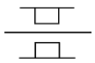
- 원통 롤러 베어링
- 원추 롤러 베어링
- 레디얼 볼 베어링
- 드러스트 볼 베어링
(정답률: 81%)
25. 보기 도면의 10 이란 숫자 해독으로 올바른 것은?
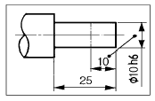
- 10 mm 만 표면처리
- 50 mm 에 φ10h6 로 가공
- 10 mm 만 φ10h6 로 가공
- 10 mm 만 제외하고φ10h6 가공
(정답률: 92%)
26. 보기와 같이 3각법으로 투상한 정면도와 평면도에 가장 적합한 우측면도는?
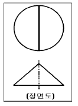
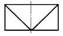
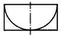
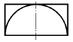
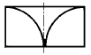
(정답률: 75%)
27. 보기와 같은 정면도와 평면도에 가장 적합한 우측면도는?
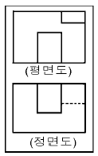
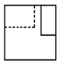
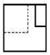
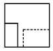
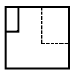
(정답률: 87%)
28. 보기와 같이 물체의 구멍, 홈 등 특정 부위만의 모양을 도시하는 투상도의 명칭은?
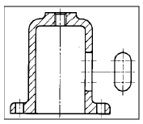
- 보조 투상도
- 국부 투상도
- 전개 투상도
- 회전 투상도
(정답률: 95%)
29. 보기 도면에서 ⓐ부분에 표시되어야 할 기하공차의 기호로 가장 적합한 것은?
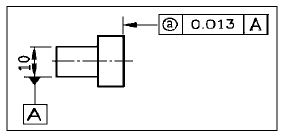
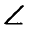
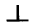
(정답률: 88%)
30. 도면에서 전체길이( )의 치수로 가장 적합한 것은?(오류 신고가 접수된 문제입니다. 반드시 정답과 해설을 확인하시기 바랍니다.)
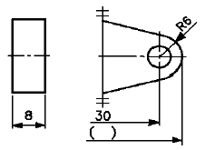
- 36
- 42
- 66
- 72
(정답률: 33%)
3과목: 기계제도(절삭부분)
31. 자중에 의한 변형을 막기위한 지지방법 중에서 긴 블록게 이지와 같이 양 끝면이 항상 평행을 유지하도록 지지하는 점(에어리점)은?
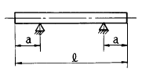
- a = 0.2113ℓ
- a = 0.2203ℓ
- a = 0.2232ℓ
- a = 0.2386ℓ
(정답률: 62%)
32. 0.001 mm의 측정량 변화에 대해 0.1 mm의 지시변화가 있는 측정기의 감도(배율)는?
- 10배
- 100배
- 1000배
- 10000배
(정답률: 79%)
33. 블록 게이지의 대표적인 표준 조합이 아닌 것은?
- 8품
- 32품
- 1⑤품
- 76품
(정답률: 83%)
34. M1 형 버니어 캘리퍼스로 측정할 수 없는 것은?
- 두께측정
- 피치측정
- 내경측정
- 단차측정
(정답률: 77%)
35. 사인 바(sine bar)를 사용할 때 설치각을 몇 도 이하로 하여야 오차가 적게 생기는가?
- 20°
- 30°
- 45°
- 55°
(정답률: 84%)
36. 그림과 같이 테이퍼량 1/30의 물건을 측정 할 때 A에서 B까지 다이얼 게이지를 이동시킨다면 게이지의 눈금차는?
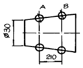
- 2.5mm
- 3.5mm
- 5.0mm
- 7mm
(정답률: 57%)
37. 테보(Tebo)게이지에 대한 설명 중 바르지 못한 것은 어느 것인가?
- 직경을 신속 정확하게 측정한다.
- 연한 재료의 검사에는 상처를 주기 쉽다.
- 볼이 설치되어 있어 통과측의 역할을 한다.
- 길이가 짧은 제품 측정에 적합하다.
(정답률: 72%)
38. 가공 완성된 제품이 허용 한계 치수 내에 있는가의 여부를 가장 빠르고 정확하게 측정할 수 있는 게이지는?
- 마이크로미터
- 다이얼 게이지
- 블록 게이지
- 한계 게이지
(정답률: 81%)
39. 나사의 유효지름 측정시 사용되지 않는 것은?
- 투영기
- 나사 마이크로미터
- 공구현미경
- 피치 게이지
(정답률: 70%)
40. 나사 측정시 측정대상이 아닌 것은?
- 피치
- 리드각
- 산의 각도
- 유효지름
(정답률: 67%)
41. 피치가 2 mm인 미터나사(M20)를 삼침법에 의하여 측정하려고 한다. 가장 적당한 삼침의 지름은?
- 0.57735mm
- 1.15470mm
- 1.24755mm
- 2.17450mm
(정답률: 71%)
42. 동일한 측정량에 대하여 지침의 측정량이 증가하는 상태에서 읽음값과 반대로 감소하는 상태에서의 읽음값의 차를 무슨 오차라고 하는가?
- 지시오차
- 측정오차
- 되돌림오차
- 시차
(정답률: 89%)
43. 한계 게이지로 측정할 때의 장점이다. 옳지 않는 것은?
- 피측정물의 오차측정이 용이하다.
- 대량측정에 적당하다.
- 합격, 불합격의 판정이 용이하다.
- 조작이 간단하므로 숙련된 경험이 필요하지 않다.
(정답률: 63%)
44. 다음 중 진직도 측정방법으로 부적합한 것은?
- 수준기에 의한 방법
- 정반상에서 측미기에 의한 방법
- 오토콜리메미터에 의한 방법
- 3각 게이지에 의한 방법
(정답률: 63%)
45. 다음중 빛을 피측정물 표면위에 투영시켜 직각 방향에서 관측하는 방법으로 표면거칠기를 측정하는 방법은?
- 표면거칠기 표준편에 의한 방법
- 촉침식 표면거칠기 측정방법
- 광절단식 표면거칠기 측정방법
- 광파간섭식 표면거칠기 측정방법
(정답률: 70%)
4과목: 정밀측정법
46. 형상공차에서 평면도 측정방법 중 오토콜리메이터나 수준기에 의한 측정법이 아닌 것은?
- 십자법
- 유니언잭법
- 대각선법
- 평행선법
(정답률: 61%)
47. 온도변화 t℃에 따라 생기는 변화량 λ 는, 길이 ℓ 과 열팽창계수 α 로부터 다음 식을 얻는다. 맞는 식은?
- λ =ℓ α t
- ℓ =λ α t
- λ t=α ℓ
- α =λ ℓ t
(정답률: 69%)
48. 나사의 유효지름을 삼침법에 의해 구하고자 할 때 필요한 값이 아닌 것은?
- 삼침을 나사의 골에 넣고 측정한 외측거리
- 삼침의 직경
- 나사 산의 두께
- 나사의 피치
(정답률: 63%)
49. 다음 그림과 같이 블록 게이지와 롤러를 이용하여 각도α를 구하는 식은?
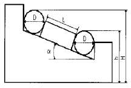
- sinα =H-h/D+L
- cosα =H-h/D+L
- tanα =H-h/D+L
- cosα =D+L/H-h
(정답률: 70%)
50. 공작기계의 정도 검사에서 공통의 축을 갖도록 배치된 2개의 원통의 축이 일치되지 않는 정도를 나타내는 정적정밀도는?
- 평행도
- 직각도
- 경사도
- 동심도
(정답률: 87%)
51. 기어의 형상 오차 중에서 기어의 성능에 가장 큰 영향을 미치는 오차는?
- 피치원 오차
- 치형 오차
- 이두께 오차
- 이 홈의 흔들림 오차
(정답률: 69%)
52. 마이크로미터의 0점 조정용 기준봉의 방열 커버 부분을 잡고 0점 조정을 실시하는 가장 큰 이유는?
- 온도의 영향 고려
- 취급이 간편하게
- 정확한 접촉을 고려하여
- 시야가 넓어진다
(정답률: 81%)
53. 광학적 측정기인 오토콜리메이터로 측정할 수 있는 것은?
- 부품의 길이 측정
- 정반의 평면도 측정
- 기어의 이두께 측정
- 나사의 유효경 측정
(정답률: 66%)
54. 진원도 측정법중 원형부분의 형상을 이론적으로 가장 정확하게 구할 수 있는 것은?
- 직경법
- 회전법
- 반경법
- 3점법
(정답률: 57%)
55. 다음 중 축용 한계게이지는?
- 스냅게이지(snap gauge)
- 봉게이지(bar gauge)
- 판형게이지
- 원통형 플러그게이지
(정답률: 76%)
56. 버니어 캘리퍼스의 어미자의 1눈금이 1mm이고 아들자는 어미자의 49mm눈금을 50등분 했을때 최소 측정치는 몇 mm인가?
- 0.1
- 0.⑤
- 0.02
- 0.01
(정답률: 69%)
57. 다음 설명 중 석정반의 장점이 아닌 것은?
- 경년 변화가 많다.
- 녹이 슬지 않는다.
- 달라 붙지 않는다.
- 돌기가 생기지 않는다.
(정답률: 85%)
58. 공기 마이크로미터의 종류가 아닌 것은?
- 유량식
- 배속식
- 배압식
- 유속식
(정답률: 76%)
59. 드릴의 홈, 나사의 골지름, 곡면 형상의 두께를 측정하는데 적합한 마이크로미터는?
- 지시 마이크로미터
- 그루우브 마이크로미터
- 디스크 마이크로미터
- 포인트 마이크로미터
(정답률: 78%)
60. 도면에 ⊥愾표시로 기하공차가 주어졌다면, 다음 중 어떤 종류의 공차인가?
- 경사도
- 직각도
- 위치도
- 평면도
(정답률: 92%)